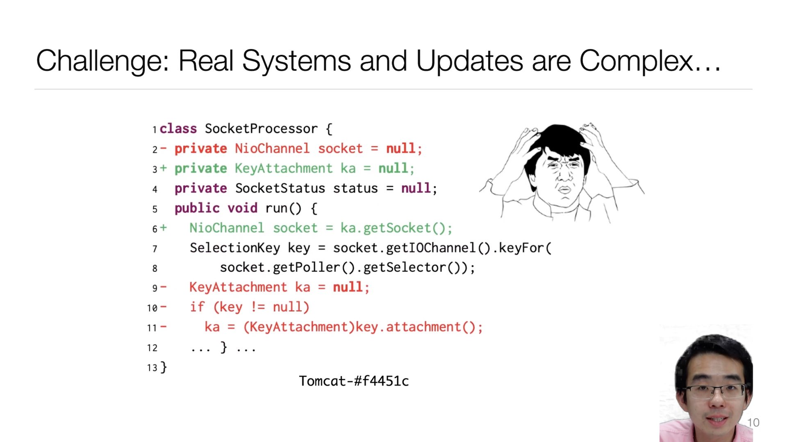

[A3] Paper Presentation
⚠️ Submission Deadline
23:59:59 Nov 25, 2022. The deadline is firm.
You may have already collected a few relevant papers in your research area.
In this assignment, you are asked to
Presentation Specifications
- The presentation must be in English.
- The resolution must be $1920 \times 1080$.
- The length must not exceed 15 minutes.
- Record a full-screen presentation (no PowerPoint toolbars, etc.).
- Your portrait must appear in the video.
Below is an example (from our ICSE'21 presentation):

We recommend screen capturing using the operating system or streaming software (e.g., OBS)'s built-in recording feature. Online meeting software (e.g., Tencent Meeting) uses a low-profile CRF to achieve minimal file size and significantly sacrifices image quality. We recommend a high-quality screen capture and using the following command to finalize your video:
ffmpeg -y -i 输入文件名 \
-vf scale=1920:1080 \
-c:v libx264 -crf 28 \
-c:a aac -b:a 128k \
输出文件名.mp4
This gives reasonable encoding time (<10 minutes on a laptop), file size, and image quality.
Live Broadcast Week
Course instructors will
Guidelines
Refer to Patrick Winston's How to Speak before preparing your presentation.
Submission Guidelines
Upload your video in box.nju.edu.cn and share it. Create a text file containing the shared url (like https://box.nju.edu.cn/f/3f67e092e1ba441187d9/). Make sure this file can be downloaded by non-login users. Submit this text file via
curl http://jyywiki.cn/upload \
-F course=ISER2022 \
-F module=A3 \
-F token={{token}} \
-F stuid={{student id}} \
-F stuname={{full name (chinese)}} \
-F file=@{{path to your submission, the txt file}}
Upon succeed, the following message will be displayed:
[SUCC ✓] Received ISER2022-A3 ... (...) xxx.txt at ...
Fill in the token in the up-right corner of this page (and refresh) will display your submissions below.